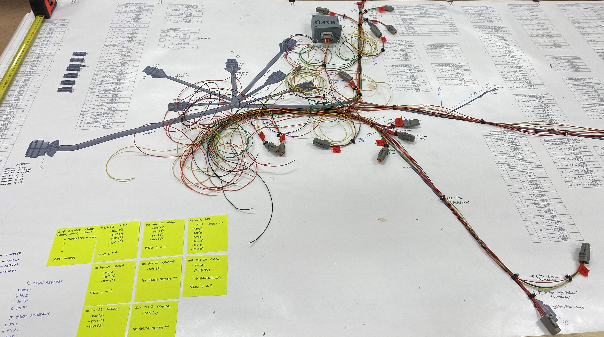

At the beginning of 2022, I joined the RMIT Racing team, hoping to learn some skills and build on my knowledge in the realm of electronics. In August, I was promoted to Electronics System Head and guided my team to complete a wiring harness for our FSAE Combustion Car to compete in December 2022 for the last time as a combustion team.
Below are some photos of the harness we built for our R22 car.
This project was a huge learning curve for me as the only experience I had with electronics stemmed from my part-time job at Jaycar Electronics and personal hobby-level experience.
/*https://www.rmitracing.com.au/*/